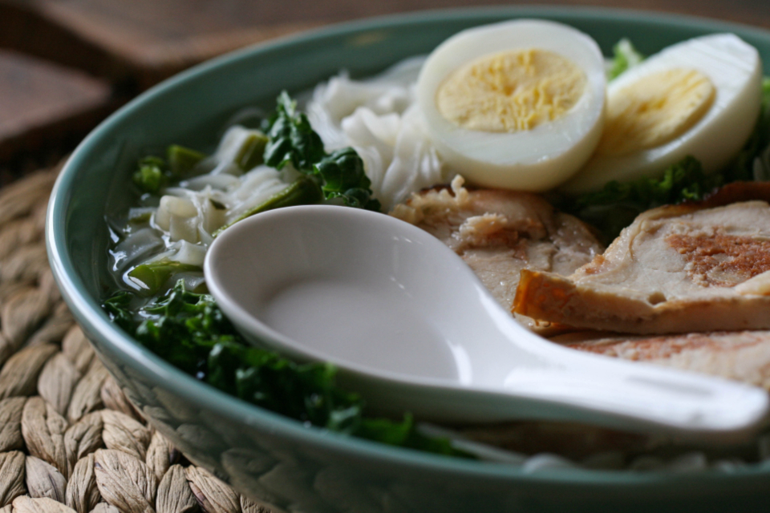

「移転する前は、けっこうな頻度で担々麺が食べたくなると訪問していましたが、移転してからはなかなか足が遠のいています。でも移転先の方がお店も綺麗で雰囲気は良いと思います。何でも料理は美味しそうなのですが、伺った際は担々麺しか頼んだ事ないのです。今回も担々麺1080円とラー油ご飯330円をオーダー。辛さは小、中、大と選択できます。オーダーから4分で着丼。かなり早い提供ですね。やっぱりリピートしちゃうのには理由がありますね。担々麺のスープは濃厚で少しドロっとしており胡麻の香りが感じられ美味しいです。具材はシンプルに挽肉、ネギ、チンゲン菜。麺は中細麺ですが非常にスープと相性が良くスルスルと食べてしまいます。これといった特徴はないのですがバランスが良い担々麺だと思います。また担々麺が食べたくなったら訪問させて頂きます。」
辛さは、選べる。仕事は、削らない。
担々麺と麻婆豆腐——四川の一杯を、柏の厨房から。
千葉県柏市中新宿、移転して新しくなった厨房から。辛さを自分で選べる担々麺と麻婆豆腐を、待たせずにお届けします。
写真は貴店ご提供のものに差し替えます
SIGNATURE 01
看板は、担々麺。
濃厚で少しとろみのあるスープに、胡麻の香りがふわりと立つ一杯。挽肉・ネギ・チンゲン菜というシンプルな具材と、スープによく絡む中細麺の組み合わせです。辛さは小・中・大の3段階からお選びいただけます。香ばしい黒ゴマを効かせた「黒ゴマ担々麺」も、ご来店のお客様から「特に美味しかった」との声をいただいている人気の一杯です。
辛さは3段階から選べます
- 小
- 中
- 大
写真は貴店ご提供のものに差し替えます
SIGNATURE 02
花椒の痺れ、本場の辛さ。
花椒の痺れと、辛さのキレ。そこに奥深い味わいが重なる一皿です。担々麺と同じく、辛さは小・中・大からお選びいただけます。辛いものが好きな方に、まず試していただきたいメニューです。
辛さは3段階から選べます
- 小
- 中
- 大
写真は貴店ご提供のものに差し替えます
CONCEPT DIGEST
厨房が大切にしていること。
01
オーダーから、最速級の一皿
厨房でお待たせしないことも、仕事のうちだと考えています。ご来店のお客様から「オーダーから4分で着丼」という声もいただきました。混み合う時間帯もありますが、できる限りお待たせしないよう、厨房を動かしています。
02
移転して、厨房も店内も一新
移転してから、厨房も客席もすべて新しくなりました。「お店も綺麗で雰囲気は良い」「店内は綺麗で清潔」と、移転前からご存じのお客様からもお声をいただいています。
03
辛さは3段階、好みで選べる
担々麺・麻婆豆腐は、辛さを小・中・大の3段階からお選びいただけます。辛いものが得意な方も、これから挑戦する方も、自分のペースで四川の味を楽しめます。
写真は貴店ご提供のものに差し替えます
VOICE
お客様の声
実際にご来店いただいたお客様から寄せられたお声を、良い評価もそうでない評価も選ばず、そのまま5件ご紹介します。
「担々麺巡りでランチに訪問。ランチメニューの担々麺とチャーシュー丼セット(1350円)を注文しました。先に提供されたチャーシュー丼は、よく味の染みた薄切りチャーシューが散りばめられており、ご飯が進む一杯。シンプルながら満足感のある美味しさでした。続いて担々麺。辛さは「中」くらいにしましたが、全体的に優しめで食べやすい味わい。麺は中太で食べ応えがありますが、スープとの絡みはやや控えめで、個人的にはもう少しコクや濃厚さがあっても良いかなと感じました。店内では麻婆豆腐を注文されている方も多く、とても美味しそうだったので、次回はそちらも試してみたいと思います。店内は綺麗で清潔がありました。また駐車場が店の横にあり停めやすかったです。支払いは現金orPaypayでした。ごちそうさまでした。」
「当地への移転前にも訪問した事がありますが、相変わらずの美味しさ。開店前に並んで、着席ギリギリセーフ。20席に満たない感じでしょうか。接客も良い感じでしたが、食べ終わって一息付かないうちに丼下げられ、なんだかなぁ。ごちそうさまでした。」
「土曜日のお昼に来店しました。坦々麺、黒ゴマ坦々麺、高菜チャーハン。坦々麺は辛さが選べます。全品美味しく頂きました。特に黒ゴマ坦々麺は特に美味しかったです。」
「辛くて美味しい麻婆豆腐を探して!辛さのキレもあり、花椒の痺れもあり奥深い味でとても美味しかったです。5ヶ月の赤ちゃんが座れる椅子もありました。混んでいましたが回転も良く、あまり待たずにお食事できました。」
いただいたお声は、良いものもそうでないものも、真摯に受け止め、日々の接客・調理に活かしています。
GALLERY
厨房と一皿の、いま。
料理の一皿、移転後の店内。写真でも少しだけ雰囲気をお伝えします。
写真は貴店ご提供のものに差し替えます
写真は貴店ご提供のものに差し替えます
写真は貴店ご提供のものに差し替えます
ACCESS
柏市中新宿の厨房へ。
千葉県柏市中新宿1丁目5-5。店の横に駐車場をご用意しています。営業時間・定休日は変更となる場合がありますので、最新情報はお電話にてご確認ください。
PHOTO SAMPLE(フリー素材によるイメージ写真)

